GE Exclusive Use Only
Direction 5670006, Rev# 1
Discovery MR750w GEM Service Methods
Module Version 20.0, Version Date 10/10/11
GE Exclusive Use Only |
| Required Persons | Preliminary Reqs | Procedure | Finalization |
|---|---|---|---|
| 1 | N/A | 45 mins. | 5 mins. |
| Item | Qty | Effectivity | Part# | Manufacturer | |
|---|---|---|---|---|---|
| Power Measurement Kit (Wattmeter Kit) | 1 | - | 5307511-2 | - | |
| Digital Multimeter | 1 | - | 46-194427 P284 | - | |
| Medium Phillips Screwdriver | 1 | - | - | - | |
| 12-inch Crescent Wrench | 1 | - | - | - | |
| Small Flat Head Screwdriver | 1 | - | - | - | |
| ||||
| FATAL ELECTRIC SHOCK HAZARD. | ||||
| THE RF AMPLIFIER IS NOT DISABLED. | ||||
| TO PREVENT FATAL ELECTRIC SHOCK, ENSURE THE RF AMPLIFIER IS DISABLED WHILE CONFIGURING THE CALIBRATION TOOLS. |
| ||||
| ELECTRICAL/RF BURN HAZARD. | ||||
| RF BURNS Can Occur AS A RESULT OF DISCONNECTING HELIAX CABLES WHILE THE SYSTEM IS SCANNING. | ||||
| PREVENT POSSIBLE RF BURNS WHEN DISCONNECTING HELIAX CABLES FROM J3, J4, or J22 ON THE RF AMP BY VERIFYING THAT THE SYSTEM IS NOT MANUALLY PRESCANNING OR SCANNING. VERIFY THAT THE SCAN DESKTOP ICON DISPLAYS THE “IDLE” MESSAGE AND THE RF ENABLE SWITCH IS IN THE “OFF” POSITION. |
| ||||
| Possible equipment damage. | ||||
| Operating the RF amplifier with improper load can cause permanent damage to the amplifier. | ||||
| Do not operate the RF amplifier with an improper load connected to its output. |
| ||||
| Possible equipment damage. | ||||
| Hardware and phantom, left in the magnet bore and not be using, can cause equipment damage. | ||||
| Prevent coil and associated switch damage, by removing all phantoms and hardware (i.e., Head Coil, Surface Coil) from the magnet bore. |
| ||||
| Possible equipment damage. | ||||
| If the Wattmeter Sensor is connected or disconnected while the meter is ON, equipment damage can occur. | ||||
| Do not connect/disconnect Wattmeter Sensor while meter is ON. Always turn meter OFF prior to plugging/unplugging Sensor. |
| Condition | Reference | Effectivity |
|---|---|---|
Recommended Minimum Power On Time: Exciter - 20 minutes | - | - |
The workflow for calibrating the RF output and UPM is: 1) Adjust RF output of Body Channel 1, perform UPM calibration for Body Channel 1, and perform UPM functional check for Body Channel 1. 2) Adjust RF output of Body Channel 2, perform UPM calibration for Body Channel 2, and perform UPM functional check for Body Channel 2. 3) Adjust RF output of Head, perform UPM calibration for Head, and perform UPM functional check for Head. | - | - |
The procedure includes instructions to set up and calibration the maximum power for both the body and head scans. The first five steps for the body scan; the second five steps are for head scan.
Disable the T/R, DD, and RF Inputs (see Disabling T/R, DD, and RF Input).
Set up the RF Coupler for Body Calibration (see Setting up the RF Coupler For Body Calibration).
Set up the Wattmeter and the Body Dummy Load (see Wattmeter and Dummy Load Setup).
Set up the Wattmeter to measure Forward Body Maximum Power (see Setting up the Wattmeter to Measure Forward Body Maximum Power).
Set up for the Body Scan (see Scan Setup).
Set up and calibrate Head Port Maximum Power (see Head Port Maximum Power Setup and Calibration).
Set up the RF Coupler for the Head Calibration (see Setting up the RF Coupler).
Set up the Wattmeter and Head Dummy Load (see Wattmeter and Dummy Load Setup).
Set up the Wattmeter to measure Forward Head Maximum Power (see Scan).
Set up for the Head Scan (see Setting up the Wattmeter to Measure Forward Head Maximum Power).
| ||||
| fatal electric shock hazard. | ||||
| the RF Amplifier is not disabled. | ||||
| to prevent fatal electric shock, ensure the rf Amplifier is disabled while configuring the calibration tools. |
Verify that the system is idle and all coils have been removed from magnet bore.
Open the front door of the PEN Cabinet.
On the front of the Driver Module, disable T/R error reporting by setting the TR and DD switches to the DISABLE (disable faults) position.
Illustration 1: Driver Module Switch
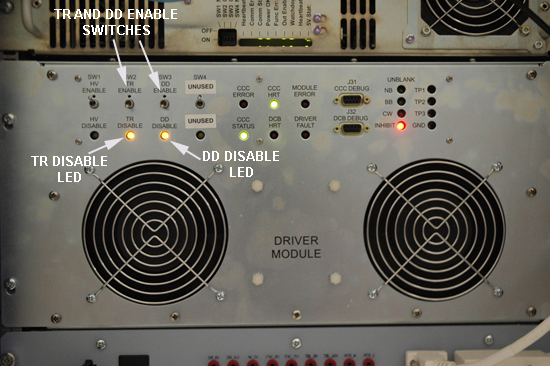
| NOTE: | HV should remain set to Enable. |
Place the RF Enable switch on the DTX1 Exciter, located in the top of the PEN cabinet, into the Disable (down) position. See Illustration 2.
Illustration 2: RF ENB Switch
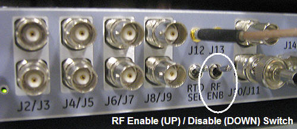
Both body outputs (channel 1 and channel 2) must be fully calibrated. First calibrate channel 1, and then calibrate channel 2. When calibrating channel 1, remove the RF input for channel 2 or J21 on the RF Amp. When calibrating channel 2, remove the RF input for channel 1 or J14 on the RF Amp.
Insert the 50KW Element into the Forward Sensor Port (Blue- 4300A374-3). Make sure the arrows on the elements point in opposite directions. Lock Element in place using the locking tab on the sensor. See Illustration 3. The Reflected port is not used during this procedure. Placing the 5000W element (Blue 4300A374-6) into the Reflected port is just a safety measure, and is not used during Body calibration.
Illustration 3: RF Coupler Setup for Body Mode
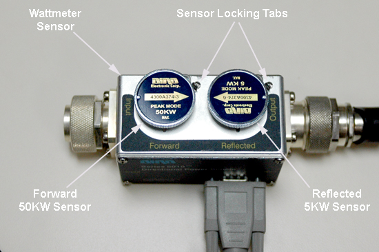
Use DVM to measure resistance of input to the dummy load. Confirm resistance measures between 50 ohms +/- 5 ohms.
| NOTE: | If the dummy load is out of spec return 3T RF kit for repair. Do NOT proceed with RF amp output calibration. |
| ||||
| FATAL ELECTRIC SHOCK HAZARD. | ||||
| THE RF AMPLIFIER IS NOT DISABLED. | ||||
| TO PREVENT FATAL ELECTRIC SHOCK, ENSURE THE RF AMPLIFIER IS DISABLED WHILE CONFIGURING THE CALIBRATION TOOLS. |
| ||||
| ELECTRICAL/RF BURN HAZARD. | ||||
| RF BURNS Can Occur AS A RESULT OF DISCONNECTING HELIAX CABLES WHILE THE SYSTEM IS SCANNING. | ||||
| PREVENT POSSIBLE RF BURNS WHEN DISCONNECTING HELIAX CABLES FROM J3, J4, OR J22 ON THE RF AMP BY VERIFYING THAT THE SYSTEM IS NOT MANUALLY PRESCANNING OR SCANNING. VERIFY THAT THE SCAN DESKTOP ICON DISPLAYS THE “IDLE” MESSAGE AND THE RF ENABLE SWITCH IS IN THE “OFF” POSITION. |
| ||||
| Possible equipment damage. Do not connect/disconnect Wattmeter Sensor while Meter is ON. Always turn Meter OFF prior to plugging/unplugging Sensor. | ||||
Verify scanner is in “idle”. Confirm RF ENB on DTX1 Exciter in Disable (down) position. DTX1 Exciter is located in upper part of Penetration Cabinet. See Illustration 2.
Disconnect the appropriate Body output cable from the front panel of the RF Amplifier, as follows:
If calibrating Body Channel 1, disconnect Body output cable J4 from the RF Amplifier. Leave cable at J22 connected.
If calibrating Body Channel 2, disconnect Body output cable J22 from the RF Amplifier. Leave cable at J4 connected.
Remove the appropriate Body input cable, as follows:
If calibrating Body Channel 1, remove cable J21 (input for Body Channel 2). This connect should remain off during RF calibration and UPM calibration and functional check for Channel 1.
If calibrating Body Channel 2, remove cable J14 (input for Body Channel 1). This connect should remain off during RF calibration and UPM calibration and functional check for Channel 2.
Connect the Input of the Coupler to J4 or J22 on the front panel of the RF Amplifier.
Illustration 4: Connection of RF Coupler to Body Output
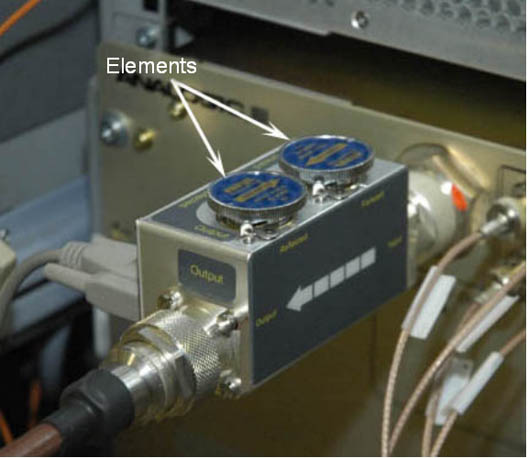
| ||||
| Electric shock risk! | ||||
| pay close attention to the connections to the dummy load. Failure to connect the dummy load correctly could result in electric shock. | ||||
Connect the Output of the RF Coupler to the Dummy Load.
Illustration 5: Complete Body Output Test Setup
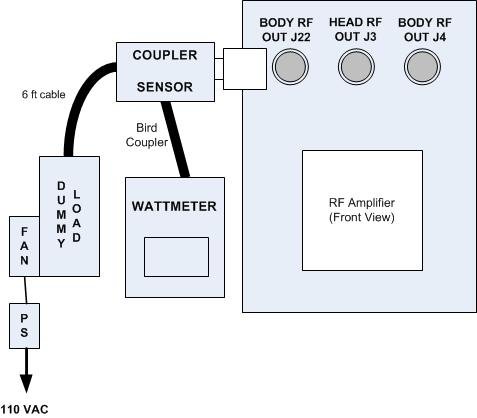
Connect one end of the Wattmeter cable to the Wattmeter Sensor connector, (RS232 is unused). Connect the other end to the Coupler.
| ||||
| Do Not Apply RF Power To The Dummy Load Without Its Fan In Operation. Doing So Will Result In Catastrophic Damage To The Dummy Load. | ||||
Make sure to plug the fan for the dummy load into a service outlet located in the upper right part of the PGR Cabinet. AT NO TIME should you use this dummy load without its fan running.
Place the RF ENB switch into the Enable (up) position.
| NOTE: | For a more detailed discussion of the Wattmeter, see Watt Meter (5307511) Introduction. |
Press the [ON] button on the Wattmeter. (If coupler and sensor is not correctly attached to the amplifier you will get a “No Sensor” indication).
Select the arrow  button under Scale.
button under Scale.
Type: 50000 to set the range.
Select <Enter> button.
Check the setting by selecting the arrow button under Scale.
Press Enter to exit.
Select the arrow button under Fwd Units make sure the scale reads “W” (or “kW “on some watt meters). If the scale reads dBm, select the arrow button under Fwd Units again, to toggle the scale to read “W” (Watts or kW kiloWatts) on the TOP, Forward Power scale. Ignore the BOTTOM, reflected Power scale value. It is not used during Maximum Power Calibration.
Select the Shift button.
Select the arrow button under Setup.
Verify that the output reads 43, and then hit the Enter button.
Illustration 6: Wattmeter Display Set to Read Peak Power Sensor

| NOTE: | This action displays the Sensor Type configured in the Wattmeter. This procedure uses Sensor” Type 43”, which is optimized for peak power measurement. |
Click the Enter button.
Select the [Type] button and then toggle to change the unit of measurement to Peak.
All kits require an offset to ensure accurate measurement. Locate the Element Offset Factors card in the kit and view the offset for 3T Dual Drive Body Output.
Illustration 7: Element Offset Factor Card
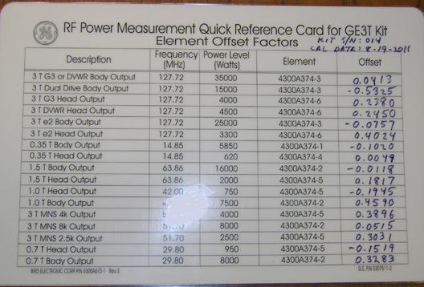
If an offset exists, press the Offset button on the wattmeter. Enter in the numerical value that was displayed on the kits offset card and press the Enter key.
| NOTE: | If entering a negative value, first enter the numerical value then the minus symbol (-). |
Illustration 8: Wattmeter Set to Display Peak Power

Place the RF Enable switch on the exciter (located on the top of the PEN cabinet) to the enable (up) position.
Perform a landmark for a body scan. A phantom is not needed.
Start the RF/UPM tool:
In proprietary mode:
On the Calibration tab, select [Calibration Wizard].
On the Calibration Wizard screen, select [Click here to start tool].
Select [RF/UPM Cal & Functional Check (Body)].
At the alert, select [Yes] to open the RF/UPM Tool (shown in Illustration 9).
For the non-proprietary service tool:
On the Common Service Desktop, select the Calibration tab.
From the Calibration menu, select [UPM Tool].
Select [Click here to start this tool] to open the UPM Tool.
Illustration 9: UPM Tool interface
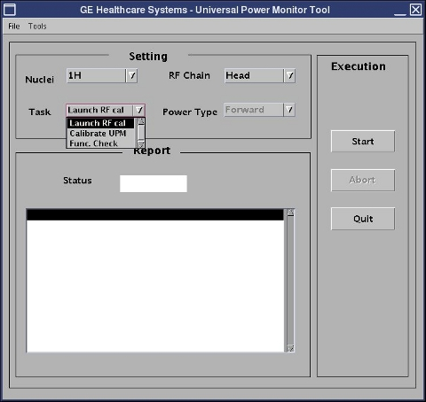
On the UPM tool, set the Task drop-down list to Launch RF Cal.
Set RF Chain to Body Ch 1.
If calibrating channel 2, select Body Ch 2.
Select Start.
When a popup appears asking if the system is properly set up, click Yes.
The system sets the proper sequence for RF calibration of the selected body channel. This process takes about one minute.
When a popup titled RF Amp Calibration appears, do not select anything.
Illustration 10: RF Amp Calibration popup
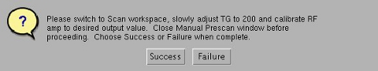
Click the Patient icon to go to the Scan workplace.
Illustration 11: Patient icon

In the Prescan Looping window, set the Transmit Gain (TG) to 180. Confirm that a reading is present on the Wattmeter. If the reading is zero or very low, then 1) confirm correct center frequency value and 2) select Done to stop looping and recheck test setup cabling.
Illustration 12: Prescan Looping Window
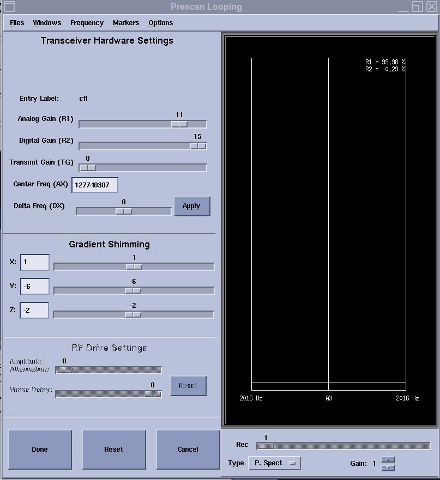
If the amplifier trips, reset the TG to its highest setting before tripping.
| NOTE: | If Manual Prescan must be stopped and re-started, you must re-launch the calibration sequence using the UPM Tool. Select [Failure] in the RF Amp Calibration popup (see Illustration 10), and then click [Start] on the UPM Tool with the same menu selections, to re-launch the calibration sequence. |
Slowly increase the TG to 200.
| NOTE: | Allow 10 seconds for the meter reading to stabilize before making the next adjustment. |
Alternate increasing TG in small increments, and slowly adjusting appropriate Gain Adjust pot on RF Amp front panel, until the wattmeter reads 15kW +/- 500 Watts AND TG = 200.
Illustration 13: Body Gain Adjust Pots

After the RF Output is calibrated to specification, reduce the TG to 0 (zero) and then click [Done].
Go back to the CSD by clicking the CSD icon.
Illustration 14: CSD icon
When the RF output is within specification, click [Success] on the RF Amp Calibration popup (see Illustration 10). If the RF output cannot be adjusted to spec, see RFA Loopback Test.
| NOTE: | The RF Amp Calibration popup may be hidden behind the ICW window. Move the ICW window to the left or right to see the RF Amp Calibration popup. |
Click [Yes] to confirm that the RF Output was successful.
After a few seconds, PASS appears in the status area of the UPM Tool.
After calibrating either Body Channel 1 or Body Channel 2, continue with UPM Head and Body Setup and Calibration.
On the UPM Tool, change the Task drop-down to Calibrate UPM.
Set Power Type to Forward.
Click [Start].
No changes to the setup are needed at this time.
Illustration 15: UPM Tool selections
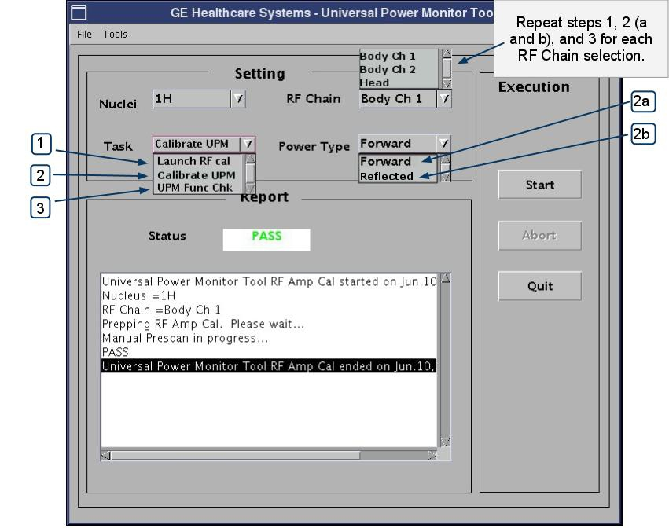
After calibrating Forward power, calibrate Reflected power as follows:
Disable the RF ENB switch by moving it to the Down position.
Disconnect the RF Dummy Load from BODY RF OUT / J4 for channel 1 or J22 for channel 2 on the front of the RF Amplifier. Leave J4 or J22 open and unconnected.
Enable the RF ENB switch by moving it to the Up position.
Return to the UPM Tool interface.
Change Power Type to Reflected and click [Start]
After completing the UPM Calibration, continue with the UPM Functional Check, as follows:
Disable the RF ENB switch by moving it to the Down position.
Reconnect the RF Dummy Load from BODY RF OUT / J4 for channel 1 or J22 for channel 2 on the front of the RF Amplifier.
Enable the RF ENB switch by moving it to the Up position.
Return to the UPM Tool interface.
Change Task to UPM Functional Check and click [Start].
After completing the UPM Functional Check, proceed to the next logical step in the RF/UPM calibration (either Body Channel 2 or Head).
Do not perform head output power calibration until body output calibration has been completed.
Verify that the system is idle and only the head coil is installed in the bore and connected to the system.
Open the PEN Cabinet door.
Confirm TR and DD error reporting disabled at Driver Module by setting disable switches to DISABLE (down) position. See Illustration 1.
| NOTE: | HV should remain set to Enable. |
Insert the 5000W Element into the Forward Sensor Port, (Blue-4300A374-6). Make sure the arrow on the element points in the direction of the arrow (from Input to Output) on the Sensor. Lock Element in place using the locking tab on the sensor.
Illustration 16: RF Coupler Setup for Head Mode
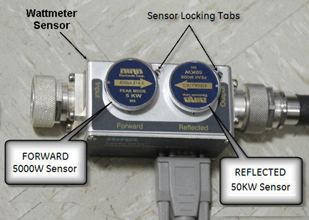
Insert the 50KW Element into the Reflected Sensor Port (Blue-4300A374-3). Make sure the arrows on the elements point in opposite directions. Lock Element in place using the locking tab on the sensor. (See Illustration 16). The reflected port is not used during this procedure. Placing the 50KW element into the Reflected port is a safety measure.
Verify scanner is in “idle”. Confirm RF ENB on DTX1 Exciter in Disable (down) position. DTX1 Exciter is located in upper part of Penetration Cabinet. See Illustration 2.
Disconnect the Head cable J3 “head Output” from the front of the RF Amplifier.
Connect the Input of the Coupler to J3 of the RF Amplifier.
Illustration 17: Connection of RF Coupler to Head Output
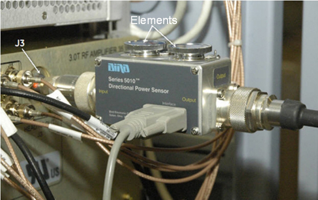
| NOTE: | Some new RF Kits may require using the N Connector for Head to 7/16 adapter included in the kit. |
| ||||
| Electric shock risk! | ||||
| pay close attention to the connections to the dummy load. Failure to connect the dummy load correctly could result in electric shock. | ||||
Connect the RF Coupler output to the Dummy Load.
Illustration 18: Complete Head Output Test Setup
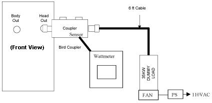
Connect one end of the Wattmeter cable to the Wattmeter sensor output. (RS232 is unused). Connect the other end to the coupler.
Make sure to plug the fan for the dummy load into a service outlet in the PGR Cabinet. AT NO TIME should you use this dummy load without its fan running.
| NOTE: | DO NOT APPLY RF POWER TO THE DUMMY LOAD WITHOUT ITS FAN IN OPERATION. DOING SO WILL RESULT IN CATASTROPHIC DAMAGE TO THE DUMMY LOAD. |
Put the RF ENB switch in the Enable (up) position.
For more information on the Wattmeter, see Wattmeter (2372868) Introduction.
Press the [ON] button on the Wattmeter. (If coupler and sensor is not correctly attached to the amplifier, you will get a “No Sensor” indication).
Select the [Arrow] button under Scale.
Type 5000 to set the range and then hit [Enter].
To validate the setting, select the [Arrow] button under Scale.
To exit, press the <Enter> key.
Select the [Arrow] button under Fwd Units. Make sure the scale reads “W” (or “kW” on some wattmeters). If the scale reads dBm, select the [Arrow] button under Fwd Units again to toggle the scale to read “W” (Watts or kW kiloWatts) on the TOP, Forward Power scale. Ignore the BOTTOM, reflected Power scale value. It is not used during Maximum Power Calibration.
Select the <Shift> button.
Select the [Arrow] button under Setup.
Verify that the wattmeter display reads “43”. If not, type 43 and then press the Enter button.
Illustration 19: Wattmeter Display Set to Read Peak Power Sensor
| NOTE: | This action displays the Sensor Type configured in the Wattmeter. This procedure uses Sensor “Type 43”, which is optimized for peak power measurement. |
Press the Enter button.
Select the arrow button under Type, change unit of measurement to Peak.
Some kits require an offset to ensure accurate measurement. Locate the Element Offset Factors card in the kit and view the offset for 3T DVMR Head Output 4500W.
Illustration 20: Element Offset Factor Card
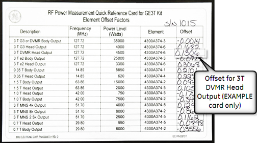
If an offset exists, press the Offset Button on the wattmeter. Enter in the numeric value that was displayed on the kits offset card and then press the Enter button.
| NOTE: | If entering a negative value, first enter the numerical value then the minus symbol (-). |
Click Apply in the pop-up that appears.
Illustration 21: Wattmeter Set to Display Peak Power and Watts
The meter is now configured to read RF Peak Power, in watts, for the Head Maximum Output calibration.
Prepare the system to scan in Head mode by installing the Head Coil on the cradle. Landmark the Head coil.
Start the RF/UPM tool:
In proprietary mode:
On the Calibration tab, select [Calibration Wizard].
On the Calibration Wizard screen, select [Click here to start tool].
Select [RF/UPM Cal & Functional Check (Head)].
At the alert, select [Yes] to open the UPM Tool (shown in Illustration 9).
For the non-proprietary service tool:
On the Common Service Desktop, select the Calibration tab.
From the Calibration menu, select [UPM Tool].
Select [Click here to start this tool].
Illustration 9 shows the UPM tool interface.
On the UPM tool, set the Task drop-down list to Launch RF Cal.
Set RF Chain to Head.
Select Start.
When a popup appears asking if the system is properly set up, click Yes.
The system sets the proper sequence for RF calibration. This process takes about one minute.
When a popup titled RF Amp Calibration appears, do not select anything.
Click the [Patient] icon (shown in Illustration 11) to go to the Scan workplace.
In the Scan workplace, click the patient model to open the manual prescan window.
Set the Transmit Gain (TG) to 180. Make sure everything is functioning normally and you are getting a reading on the Wattmeter.
Slowly increase the TG to 200 (if the amplifier trips, reset the TG to its highest setting before tripping).
Rotate the head adjust pot on the RF Amp front panel and, if necessary, increase the TG in small increments until the wattmeter reads 4500 watts (4.5kW) ± 100 watts when theTG is 200.
| NOTE: | Allow 10 seconds for the meter reading to stabilize before the next adjustment. |
After the RF Output is calibrated to specification, reduce the TG to 0 (zero).
Go back to the CSD by clicking the CSD icon (see Illustration 14).
If the RF output is within specification, click [Success] on the RF Amp Calibration popup.
Click [Yes] to confirm that the RF Output was successful.
After a few seconds, PASS appears in the status area.
On the UPM Tool, change the Task drop-down to Calibrate UPM.
Set Power Type to Forward.
Click [Start].
No changes to the setup are needed at this time.
Click [Start].
Illustration 22: UPM Tool selections
After calibrating Forward power, calibrate Reflected power as follows:
Disable the RF ENB switch by moving it to the Down position.
Disconnect the RF Dummy Load from HEAD RF OUT / J3 on the front of the RF Amplifier. Leave J3 open and unconnected.
Enable the RF ENB switch by moving it to the Up position.
Return to the UPM Tool interface.
Change Power Type to Reflected and click [Start]
After completing the UPM Calibration, continue with the UPM Functional Check, as follows:
Disable the RF ENB switch by moving it to the Down position.
Reconnect the RF Dummy Load from HEAD RF OUT / J3 on the front of the RF Amplifier.
Enable the RF ENB switch by moving it to the Up position.
Return to the UPM Tool interface.
Change Task to UPM Functional Check and click [Start].
Disable the RF ENB switch by moving it to the Down position.
Disconnect RF Coupler from J3 and reconnect head transmit line.
Re-enable TR and DD Fault switches on front of driver module. See Illustration 1.
Put RF ENB switch in the Enable (up) position.